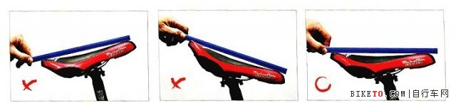
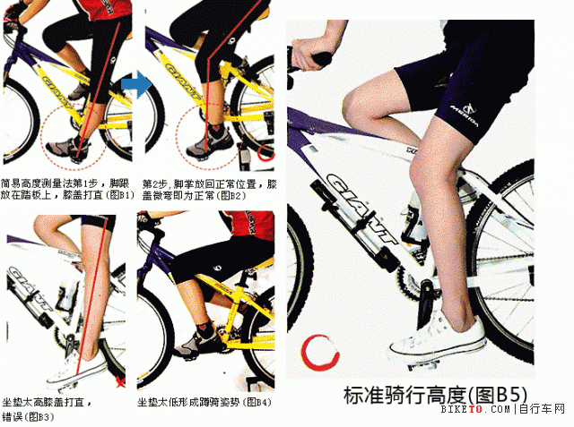
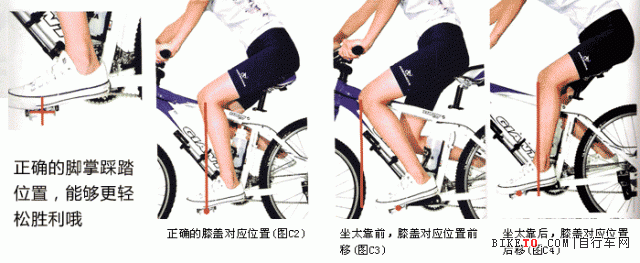
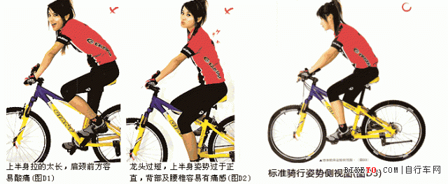
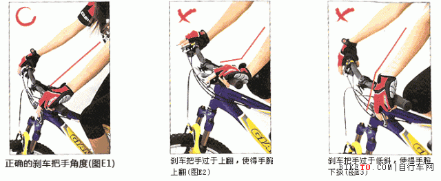
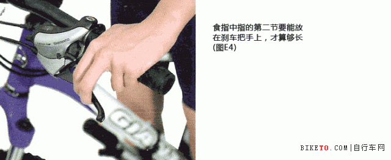
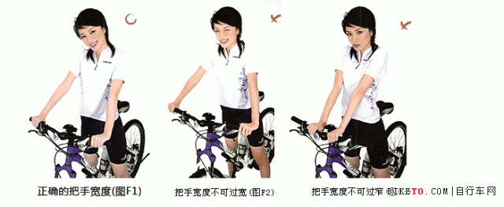
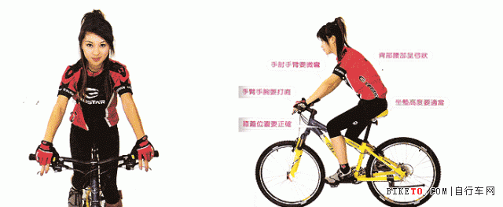

自行车骑乘姿势
引用：http://bbs.biketo.com/forum.php?mod=redirect&goto=findpost&ptid=305061&pid=2933620
-
骑行的第一规则，就是有正确的姿势，否则，你身体的这些地方会受到伤害：
- 跟腱：位于脚腕的后部，连接腓骨肌肉和脚后跟。这部位疼表明蹬踏动作有问题或是鞍座的高度不合适。可以改变脚的蹬踏位置和重新调整鞍座的高度解决。
- 脚腕：上述情况也能使脚腕发生疼痛，也可能是平足所至，如果你是平足，可以采取在鞋里放一些整形垫的办法来解决，再一种可能就是曲柄或脚蹬轴弯曲而造成的了。
- 背部：一般情况下都是由于骑行姿势不正确引起的。正确的骑行姿势应该是上体前倾，背部微微拱起，而不是向下塌陷或挺直。只有这样才会在道路颠簸时不给背部带来伤害。如果是向下塌陷的姿势，颠簸时会更塌陷，脊椎造成过度位抻而使背部感到疼痛，如果是挺直的姿势，颠簸时会使脊柱相互挤压而造成疼痛。
- 脚部：脚部的不适通常由鞋和袜子引起。太软的鞋底会使脚部的压力过于集中，另外，过高的齿轮比迫使骑手用很大的力去蹬踏，也会引起脚部的疼痛。因此，最好选购一双鞋底较硬的骑行鞋，或者穿一双鞋底较厚硬且合适的鞋，再穿一双合适舒服的袜子。
- 手和手腕：长时间的骑行会使手指麻木。颠簸的路面也会使手掌和手腕受伤害。应该经常变换双手握把的位置，活动手和手腕。另外骑行时带手套和护腕是很有好处的，建议安装大羊角副把(或称扒把)，这样可以让手和手腕在骑行的过程中得到休息。
- 膝盖：膝盖产生疼痛的原因主要有以下几个。用力过猛、齿轮比值过高、鞍座过低和蹬踏时两腿左右晃动。纠正了这几点症状就会缓解或消除。
- 肩部：肩部感到不适大多是因为车把过低或过窄。在调整鞍座高度的时候应该同时调整把的高度。
-
正确的骑行姿势应该是这样的：
- 上体前倾，头部稍倾斜前伸，目视前方，两臂自然弯曲，双手轻而有力地握住车把，腰部弓屈，双脚做垂直的园周蹬踏动作，避免两腿左右摇摆，将体重比较均匀的分配在臀部、两脚和双手上。
多人以为单车买了不就可以骑了？其实这是很不对的观念。因为每一个人的身长、手长、脚长都不一样，即使买到了尺寸对的单车，也不代表这辆单车是真正适合你的身材。其实只要参考以下简单的“设定一撇步”，花一点时间、心思作一下调整，就一定能让单车乖乖地‘服侍’你喔！别懒惰，请花几分钟时间跟我们一起检查看看吧：
坐垫角度
首先先调整最简单的坐垫角度。 坐垫的角度大致上要保持水平 ，由于目前市面上的坐垫的垫面大多是弧面，用目视可能不太准确，所以可以先拿一把长尺放在坐垫上，再用眼睛目测抓水平，这样就容易多了。
不过坐垫得角度绝不是死板板的。比如说，有些人骑完车后常常会抱怨胯下痛，这或许是坐垫前端的压力过大所致，这是可以将坐垫的鼻端稍稍向下调整一点，这样做可以减轻对胯下部位的压力，特别是在上坡的时候。相反地，有些人不是很长骑上坡，反而喜爱冲下破的乐趣，而冲下坡时因为要控制重心的关系，骑乘者常常会在坐垫与坐垫后方移来移去的，这时最好将坐垫鼻端稍微往上仰个几度，同时将坐管高度放低，这样做有助于下坡时身体在坐垫上的灵活度。

坐垫高度
再来就是设定坐垫的高度了。坐垫的高度是单车设定中最重要的一环，尤其与膝盖伤害与踏踩出力息息相关。
坐垫太高的话膝盖容易受伤，而且重心太高也容易产生意外；
太低的话脚踏踩不出力量，长期用不正确的姿势踩踏也会对膝盖与腿部产生不好的影响。
唯有正确的坐垫高度才能真正发挥出应有的踩踏效率、并拥有最正确健康又不伤害身体的踩踏姿势，而且不但不会萝卜腿，而且还能修饰腿型喔！
膝关节是单车运动时使用最频繁的身体部位，但也是最脆弱、最容易受伤的部位。当我们的腿每踩踏一圈，膝关节就会活动一次，这样频繁的动作，如果施力的方法、方向或位置不正确的话，很容易就会让膝关节受伤、甚至一辈子都不能骑车（很多膝关节的伤害是很难康复回来的），所以一定要小心才行！
设定坐垫高度常常听一些专家说什么要（胯下长*0.885）如何如何量测的？其实你不打算当一个选手的话，真的不需要将一件简单的事情搞得那样复杂。
初学者只要先将 “脚跟” 放在踏板上，然后踩几下，慢慢地调整坐垫高度，等到踏到最低点时膝盖正好打直（如图B1），这时候的坐垫高度就已经八九不离十了！依照这样的标准坐垫高度，再将“脚掌”放回原来的标准踩踏位置，如此一来，膝盖在踩踏的最低点时自然就会有一点点弯曲（如图B2），这样的伸展姿势既可以兼顾踩踏事的出力，也不会让膝关节再踩踏时受伤。当然，如果新手一下子无法习惯这样的高骑乘位置，也可以将这个“标准坐垫高度”再降低一、两公分、甚至三、四公分，还是在可以接受的范围。
设定坐垫高度时最忌讳将坐垫拉得太高（路上有很多中学生喜欢耍酷，刻意将坐垫拉得很高很高，假装自己脚很长的样子），这样的坐垫高度在踩踏时会让膝盖打直（如图B3），是很危险的动作！像单车运动这样需要双腿频繁地作踩踏回转的动作，这时如果还让膝盖打直，不仅会让踩踏有“顿点”发生，影响踩踏的连续性，而且打直时的膝盖也很伤膝关节及腿部韧带。虽然拉高坐垫后会有一种将踩踏力量“直直打出”的错觉，好像要这种姿势才能踏出去，但其实不然，不管是肌肉还是膝关节都很容易在这时（膝盖打直）磨损受伤。所以一点要记住！ 骑车踩踏是切忌不能让膝盖打直。
坐垫高度也不能太低，一般初学者由于不习惯高重心的骑车姿势，所以往往会将高度下拉，而且拉得太多，这样“蹲骑”的姿势会让腿部的力量伸展不开来（如图B4），虽然骑车时安心了些（因为重心低、而且脚掌可以踏到地面的缘故），但舒展不开的大腿、小腿、与膝盖不止会让你骑不快，长时间下来也容易造成肌肉与关节的磨损。
因此，我们在这里建议，还是先将自己的“标准坐垫高度”找出来，之后可以稍微降低几公分，慢慢习惯重心的变化，然后再一点一点地（半公分或一公分）向上调整，一直到找到那个既可以让你安心自信、又可以兼顾踩踏出力、并且能避免身体受伤的好位置。

坐垫的前后位置
坐垫的前后位置其实也与膝关节大有关系，但常常是最容易被忽略的一节。一般车友或车店往往以“好看不好看？”或“酷不酷？”等外观因素来决定坐垫的前后位置，这样是很不对的。坐垫的前后位置，与坐垫高度同样影响膝关节甚巨，所以设定时一定要小心谨慎才对。
坐垫前后位置的设定其实相当简单：
- 先在坐垫上坐好，将脚掌放在踏板上正确的位置（如图C1）然后踩个几下，
- 接着将踏板摆成水平，这是前脚的“膝盖下点”所垂下的垂直线要刚好通过踏板的中心位置（也就是踏板轴），这样就完成了（如图C2）！
- 如果垂线没有通过踏板的中心位置，就要依次调整坐垫的位置。（如图C3）坐垫位置就太过前面，而图C4则是太后面，坐垫位置太过前面或后面会影响到腿部的踩踏出力，与膝盖的磨耗也息息相关，所以不可不小心。
这个位置当然也不是死的，而是有一点弹性：
- 如果位置再后面一点点，可以让大腿的出力更好更直接，适合喜欢“大脚踩踏”方式的高出力型猛男；
- 如果位置再前面一点点则可以让膝盖与小腿的回转更顺畅，适合喜欢“她会转速”的朋友（踩踏出力小一些、但踩踏速度快一些）。
但不管是向前向后，移动的位置都不可超过标准位置2.5公分以上，超过的话很容易就会伤及膝盖与肌肉。
一般车友最容易犯的错误是将坐垫放在过于后面的位置（如图C4），这样做好像能让车子看起来更俊更酷，踩踏是好像也比较容易有那种扎实的踩踏感，但这样硬操的结果，长期下来其实对膝盖时会有所损伤的。

龙头的高度长度
龙头的高度长度主要是在调整体重压在单车上时的配重，同时也会影响操控的灵活度。
正常骑行时，我们应该将身体的重量均匀分配在骑车的“金三角”：分别是“手把”、“坐垫”与“脚踏”上（如图D3）。
不常骑车或没有骑车运动习惯的人，由于不善于使用上半身的肌肉群，腰部也不经常运动到，所以会不自觉地将龙头把手的位置弄得又高又近（接近身体），让骑车的姿势好像平常坐着的姿势那样（如图D2）。但这样看起来技术富有自然的姿势其实会让身体的重量过于集中在“坐垫”上，而“把手”所分到的重量却只是点到为止。这样的设定一开始虽然可以感觉到很自然舒服，但将大多的身体重量压在臀部（坐垫）上，骑乘久了之后臀部会因为压力过大而产生不舒服，跨下的部位也容易会有麻木的感觉。另外，像这样太过于“正直”骑姿将使得骑乘者的脊椎直接面对地面所传来的冲击，久了后就会产生腰酸背痛，长期下来对身体其实是很不好的。
所以设定龙头的高度与长度时，千万不要一味地想将龙头加高缩短；相反地，要将龙头设定在适切的位置，让身体的重量能够分一些到把手上面去（也就是上半身与手臂的肌肉上）。虽然一开始时会因为这边的肌肉群平时很少用到的关系，所以会感觉比较无力而且容易疲惫，但骑过一两次车、等肌肉群习惯这样的使用方式与强度后，酸痛不适的感觉自然就会消失。所以设定龙头的长度高度时一定要记住 “骑车黄金三角333配重原则” 。
龙头的长度则会随着车子上管长度的不同而有所变化。由于每台车子的上管长度不尽相同，所以龙头长度也不是个固定的数字。
龙头过短的话体重不容易压在前轮上，骑车时操控容易有些轻飘飘的感觉，上坡时前轮也比较容易浮起，产生危险或打乱节奏，而且上半身的力量也会有施展不开的感觉；
相反地，龙头过长则会放太多重量在前轮上，除了会让操控碍手碍脚之外，下坡时重心太过前面、后轮载重不够容易浮起或导致抓地力不足，对骑乘安全也会大打折扣，上半身过于拉伸也会增加疲累感。
所以选择适当的龙头长度往往是新车设定最要的一环，但也是店家最不容易（或不愿意）调整、而且是消费者最不容易马上感受到效果的一项设定。
所以说，专业的单车店家一定要准备多种龙头长度供消费者设定或选换。把手可以适当锯短、坐管坐垫也都可以轻易使用快拆或工具调整，唯独龙头是得大费周章的更换，是最不容易调整的操控零件。不过，一定不能怕麻烦，一点要找到自己最适合的龙头长度高度才行！
除了店家能为你建议设定外，我们也建议车友可以多购一些不同长度的龙头。偶尔更换一下，这样才能真正找到自己的“最好最舒适的骑车黄金三角”位置。骑起车来才能更不费力、也更安全。

煞车把角度
骑车前一定要先学会停下车，也就是煞车。这是安全骑乘的第一步。煞车把手的角度当然也就扮演关键性的角色。
煞车把手一般可以先设定在35-45度之间，让骑乘时， 手背与前臂可以打平为准（如图E1） 。如果手背与前臂间的角度上弯（如图E2）或下弯（如图E3）太多，都表示把手的角度不对，得重新调整。
正确的煞车把手角度可以让手臂手掌的肌肉能最舒服，而且能最快速地施力与反应。记住，让车子停下来，也就是煞车，是骑乘单车安全的第一步。一点要将煞车把手放在最好最对最自然的位置，这样遇到意外时才能让危险发生的机会降到最低。

煞车把手位置
煞车把手的角度对了还不够，手指是否能正确地控制手把也是关键。现在的自行车零件多以欧美人的体型作标准，因此对东方人来说。尺寸上往往大了一号，让人“指长莫基”。还好，经过多年的演化，现在的煞车把手大多都是有很宽广的调整空间了。所以只要请店家老板将煞车手把的位置依照你的手掌大小、手指长度作调整，基本上食指与中指的第二节要可以稳稳地放在煞车把手上才算及格（如图E4），这样真正遇到危险时，刹车的反应时间与力道才够快够有力。
尤其是手掌小的女性朋友一定要特别注意这点！千万不要拿你小小的手掌手指去屈就那个设计给西方大男人用得大大的把手，其实只要一丁点的调整，就能够让车子变成你身体的一部分。安全是绝对不能偷懒的哦

把手宽度
车把手的宽度大概要比肩膀再宽一些些，至少要与肩膀同宽，这样操控室才会灵巧有力，而且胸部肌肉自然舒展，可以呼吸得很顺畅（如图F1）。
太窄的车把手宽度会让转弯时碍手碍脚，既影响操控也危险，而且也没法大口呼吸（如图F3）。 但过宽的车把手宽度也不好，操作起来会像在开“拖拉机”（卡车），上半身也容易太前倾，徒增气力、增加腰部的负担（如图F2）。

总结
所以，当你将坐垫的角度、高度、与前后位置、还有龙头的高度长度、以及把手的宽度都照以上的方法设定对后，骑乘的姿势便会像图G1
这样，膝盖与腿部能真正使出气力并不容易受到运动伤害；上半身则是略成一个“弓”状，可以自然吸收路面的冲击与震动；而前手臂微张微弯，也稍微负载着上半身的重量（如图G2）；手指则是很自然地放在煞车手把上，可以快速轻易地停下车来。这样一来就可以完成单车的设定了！准备开始骑车啰！
